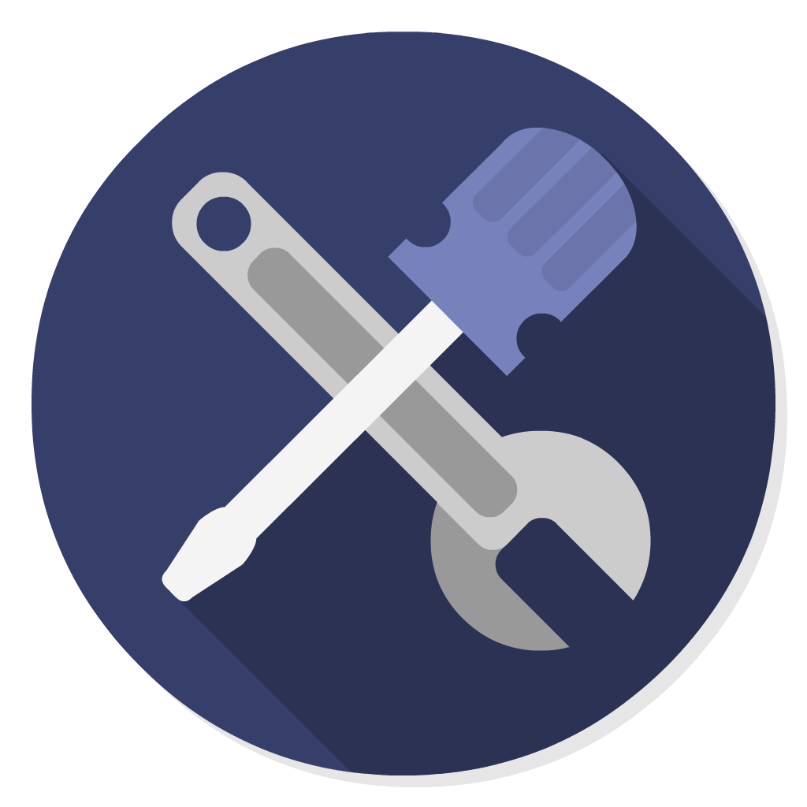
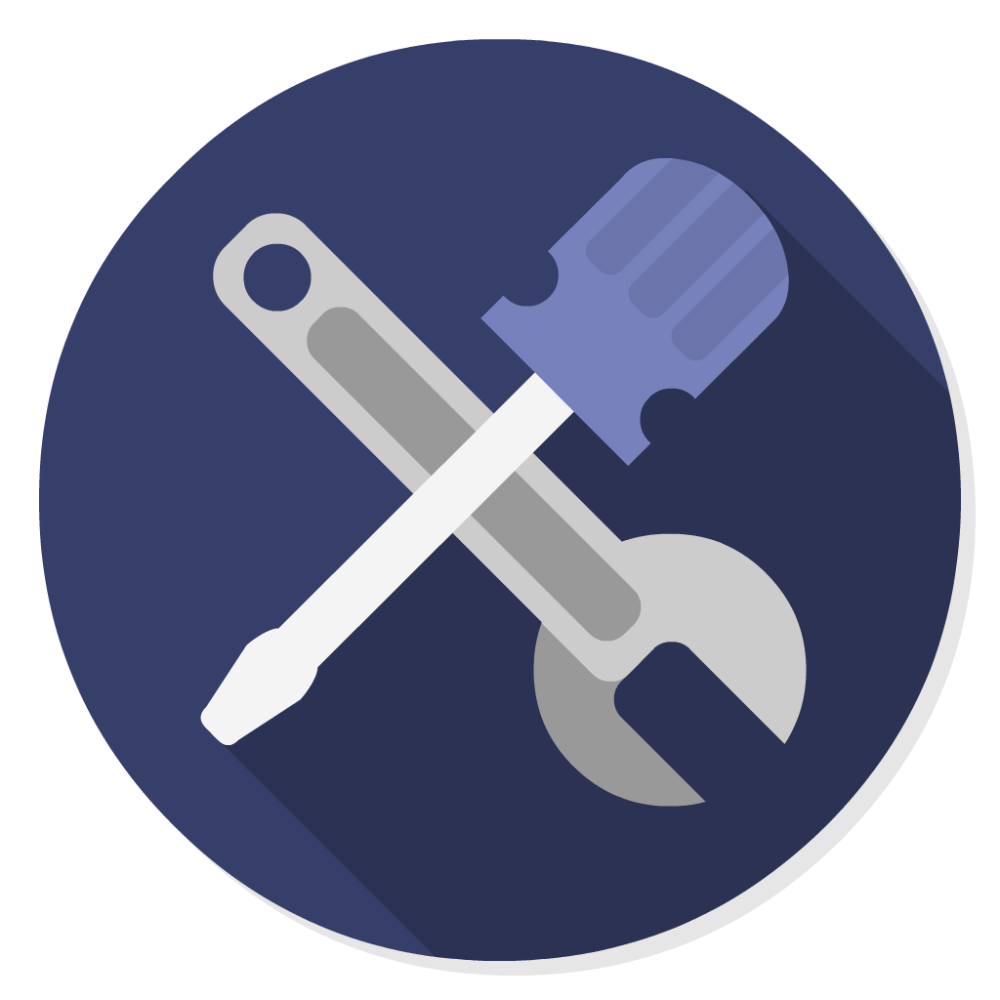

PHP: Hypertext Preprocessor
PHP is a language that allows the creation of websites and dynamic web pages. It usually requires to be ran on a server, hence it being called a server-side scripting language. It can do all sorts of things like build custom web content which can evaluate data sent from the browser or send and receive cookies. It is also designed to support the integration of operations done on databases which are often written in SQL.
Basic Syntax
PHP code is written inside the “<? php” and “?>” tags. It is insensitive on whitespaces but case sensitive. Statements are terminated with semicolons (;) and comments are written with “//” for single line comments and “/*” + “*/” for multiline comments.
<?php
/* This is a multiline comment */
$welcome = "PHP Example!";
echo $welcome;
?>
Data Types
Integer
Double
Null
Boolean
String
Array
Object
Resource
PHP has 8 data types which can be used when creating variables. The data types are Integer, Double, Boolean, NULL, String, Array, Object and lastly Resource.
Did you know?
▶ Resource is considered a special variable because it holds references to resources that are external.
▶ The Array and Object data types are considered compound because they can be used to pack up other data types.
▶ Aside from specifying the data type of PHP variables, you can specify their scope(local, global or static).
Arrays
To store more than one item in only one variable, you make use of Arrays. Creating an array starts with the $ sign to be followed by the = sign. For the declaration, we have to use array(). The array() will basically determine that what you are specifying is an array and not a regular variable. See sample code below:
<?php
$sample = array("Crispy", "Cookie", "Caramel", “Cupcake”);
?>
Accessing, Modifying and Deleting Array Elements
PHP is very flexible, for accessing an array element, you can use either {} or [].
▶ To access with [], you must use the echo function followed by the name of the array then the index of the element enclosed by “[“ and “]”.
▶ To access with {}, you must use the print function followed by the name of the array then the index of the element enclosed by “{“ and “}”.
We can then access an item inside the array using the array elements' index:
<?php
echo $sample[0]
//The output would be “Crispy”
print $sample{1}
//The output would be “Cookie”
?>
By assigning another value to a specific index, you can modify the array elements.
<?php
$sample = array("Crispy", "Cookie", "Caramel", “Cupcake”);
echo $sample[0];
//The output would be “Crispy”
$sample[0] = “Crunchy”;
echo $sample[0];
//The output would be “Crunchy” because it was modified
?>
To remove or delete array elements, you can make use of unset(toBeDeletedElement[index]).
<?php
$sample = array("Crispy", "Cookie", "Caramel", “Cupcake”);
unset($sample[2]);
?>
You can use unset(nameOfTheArray) to delete the whole array.
<?php
unset($sample);
?>
Objects
PHP is object-oriented. This makes objects very important. When you are dealing with PHP,
almost everything will be an object.
In the example below, we create an object and define its properties and values.
<?php
//The code below creates a class called Person which will be the object
class Person {
//Below are properties which are variables tied to the object
public $isAlive = true;
public $firstname;
public $lastname;
public $age;
//For assigning the values
public function __construct($firstname, $lastname) {
$this->firstname = $firstname;
$this->lastname = $lastname;
}
//For the creation of a method where the function is tied to the object
public function greet() {
return "Hello, my name is " . $this->firstname . " " . $this->lastname . ".";
}
}
//For printing out the greeting
echo $me->greet();
?>
Comparison Operators
< > = !
Comparison Operators are used to compare two values to each other. Below is a list of the comparison operators
you could use in PHP:
◆ > means Greater than
◆ < means Less than
◆ <= means Less than or equal to
◆ >= means Greater than or equal to
◆ == means Equal to
◆ != means Not equal to
Below is a sample code where a comparison operator is used:
<?php
6 < 7;
?>
Control Flow Statements
if/else
switch
for
while
if/else
It is created with the “if” keyword and the curly braces which always come in pairs. If the condition is true then the code inside the curly braces will run otherwise if the condition is false code written after the keyword “else” in the second pair of curly braces will run. See sample code below:
<?php
$items = 6
if($items < 5){
echo "You got a free coffee!";
}else{
echo “You are not allowed to enter the coffee shop”
}
?>
switch
It is used for a series of conditional if-else statements that have multiple expressions that depend on the same value. It executes a block of code what is happening on the if statement is true. It is created using the “switch” keyword then the variable to be checked and a pair of curly braces. For each comparison, there will be a case block that uses break to make an exit in the switch statement. “Falling through” is the term if there are cases right after another without having a break. If the condition is not met, then another case block will run and if all of the cases return false then it will execute the default case instead. See sample code below:
<?php
switch (20) {
case 0:
echo 'The value is 10';
break;
case 1:
echo 'The value is 15';
break;
case 2:
echo 'The value is 20';
break;
default:
echo "The value isn't 10, 15 or 20";
}
?>
for
We can use it to repeat a series of instructions instead of typing a lot the same code many times. For the for loop in PHP, it will start with the “for” keyword to be followed by a set of parentheses. There are three things inside the parentheses which would be separated by a semicolon. The first thing would be the start of the loop, second would be the place to end the loop and the third would be the thing to do to get to the next iteration. After the parentheses is a set of curly braces that will tell on what code will be ran for every iteration of the loop. See sample code below:
<?php
for ($leap = 2004; $leap < 2050; $leap = $leap + 4) {
echo "<p?>$leap</p?>";
}
?>
while
As long as the condition is true, code inside the while loop will execute. The syntax would be:
<?php
$count = 0;
while ($count<4){
echo "<p Iteration number: {$count} </p ";
$count ++;
}
?>
Functions
There are a lot of built-in functions in PHP. Some categories are the String Functions, Math Functions and Array Functions.
serverEd will only be sampling some functions for the sake of understanding function usage.
Below is a sample of the String Function
strlen which returns the number of characters in a string:
<?php
//This will get the length of a string and will print it to the screen
$length = strlen("webtechlecture");
print $length;
?>
Now, let's test Math Functions. One example of these functions would be the round() function which will round a number to an integer or a complex floating point number into a number with specific decimal places. For this example, we will use M_PI which is a PHP Constant equal to Pi. See the sample code below:
<?php
//Round pi down from 3.1416...
$round = round(M_PI);
print $round; //prints 3
//This time, round pi to 4 places
$round_decimal = round(M_PI, 4);
print $round_decimal; //prints 3.1416
?>
For arrays, there are also useful functions available. These functions include array_push() which is used to push or add elements at the end of the array, count() which can return the number of elements in the array and sort() which will simply sort the elements of an array in ascending order. Additionally, the opposite of sort() is rsort() which will sort the elements in descending order.
Helpful Links (References):
♦ https://www.upwork.com/hiring/development/server-side-scripting-back-end-
web-development-technology/
♦ https://www.sololearn.com/Course/PHP/
♦ https://www.javatpoint.com/life-cycle-of-a-servlet
♦ https://www.codecademy.com/en/tracks/php
♦ https://msdn.microsoft.com/en-us/library/aa286483.aspx